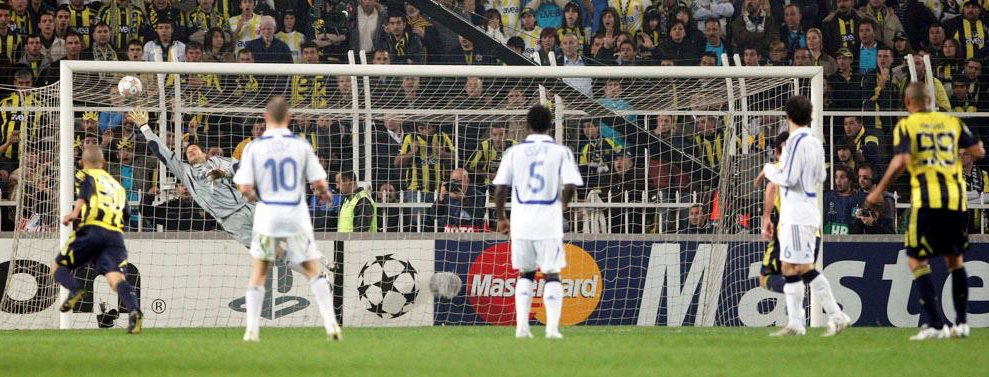

WELCOME TO SOCCER PASSION!
In international base, there are 2 major competitions. Both occur every 4 years. Spain is the only team that won three consecutive cups-2008, 2012(Euro Cup), 2010(World Cup)-
- World Cup
World Cup is the tournament that is followed by even non-soccer sport lovers. It justs magnets you in front of the TV. Click here for all-time world cup winners.
- Euro Cup